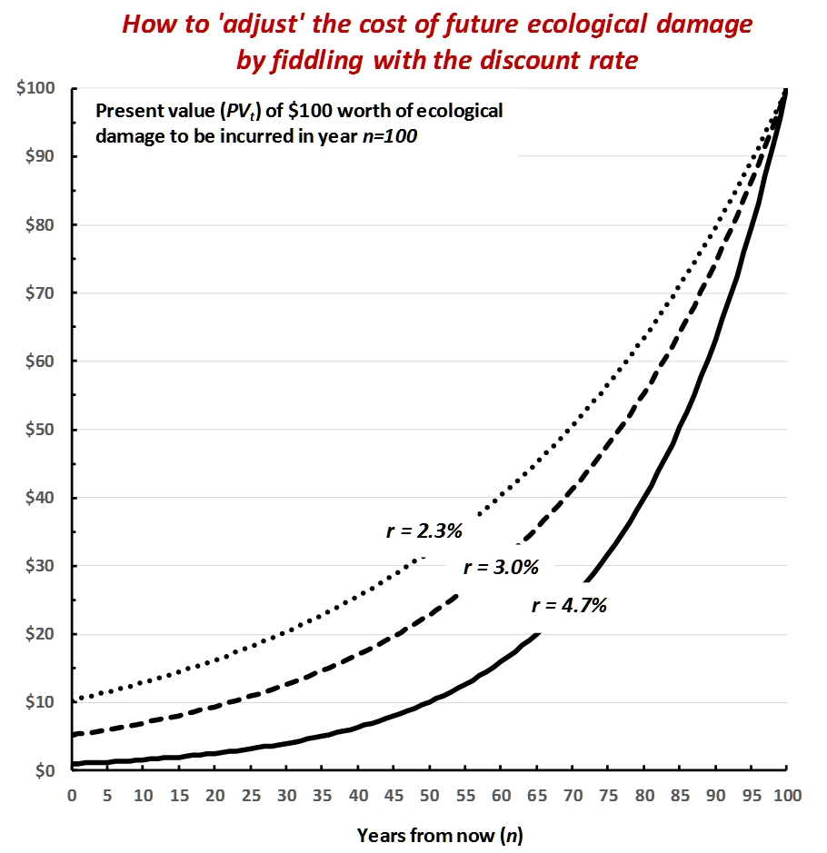
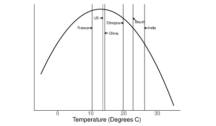
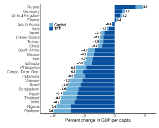
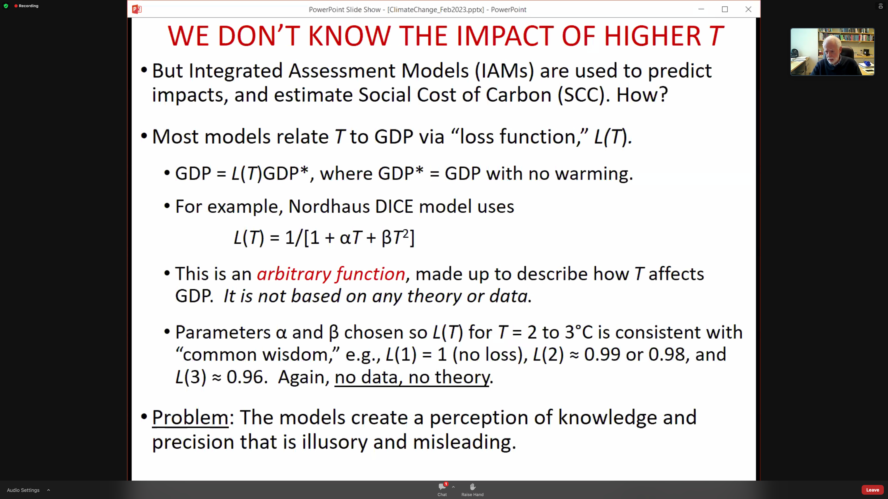

50 Climate Economics
50.1 A Blocking Neoclassical Framework
Brookes and Wagner
With its fixation on equilibrium thinking and an exclusive focus on market factors that can be precisely measured, the neoclassical orthodoxy in economics is fundamentally unequipped to deal with today’s biggest problems. Change within the discipline is underway, but it cannot come fast enough.
The economics discipline has failed to understand the climate crisis – let alone provide effective policy solutions for it – because most economists tend to divide problems into small, manageable pieces. Rational people, they are wont to say, think at the margin. What matters is not the average or totality of one’s actions but rather the very next step, weighed against the immediate alternatives.Such thinking is indeed rational for small discrete problems. Compartmentalization is necessary for managing competing demands on one’s time and attention. But marginal thinking is inadequate for an all-consuming problem touching every aspect of society.Economists also tend to equate rationality with precision. The discipline’s power over public discourse and policymaking lies in its implicit claim that those who cannot compute precise benefits and costs are somehow irrational. This allows economists – and their models – to ignore pervasive climate risks and uncertainties, including the possibility of climatic tipping points and societal responses to them. And when one considers economists’ fixation with equilibrium models, the mismatch between the climate challenge and the discipline’s current tools becomes too glaring to ignore.Yes, a return to equilibrium – getting “back to normal” – is an all-too-human preference. But it is precisely the opposite of what is needed – rapidly phasing out fossil fuels – to stabilize the world’s climate.These limitations are reflected in benefit-cost analyses of cutting emissions of carbon dioxide and other greenhouse gases. The traditional thinking suggests a go-slow path for cutting CO2. The logic seems compelling: the cost of damage caused by climate change, after all, is incurred in the future, while the costs of climate action occur today. The Nobel prize-winning verdict is that we should delay necessary investment in a low-carbon economy to avoid hurting the current high-carbon economy.
The very structure of academic economics all but guarantees that marginal thinking continues to dominate. The most effective way to introduce new ideas into the peer-reviewed academic literature is to follow something akin to an 80/20-rule: stick to the established script for the most part; but try to push the envelope by probing one dubious assumption at a time. Needless to say, this makes it extremely difficult to change the overall frame of reference, even when those who helped establish the standard view are looking well beyond it themselves.
Because equilibrium thinking underpins the traditional climate-economic models that were developed in the 1990s, these models assume that there are tradeoffs between climate action and economic growth. They imagine a world where the economy simply glides along a Panglossian path of progress. Climate policy might still be worthwhile, but only if we are willing to accept costs that will throw the economy off its chosen path.Against the backdrop of this traditional view, recent pronouncements by the International Monetary Fund and the International Energy Agency are nothing short of revolutionary. Both institutions have now concluded that ambitious climate action leads to higher growth and more jobs even in the near term.The logic is straightforward: climate policies create many more jobs in clean-energy sectors than are lost in fossil-fuel sectors, reminding us that investment is the flipside of cost. That is why the proposal for a $2 trillion infrastructure package in the United States could be expected to spur higher net economic activity and employment. Perhaps more surprising is the finding that carbon pricing alone appears to reduce emissions without hurting jobs or overall economic growth. The problem with carbon taxes or emissions trading is that real-world policies are not reducing emissions fast enough and therefore will need to be buttressed by regulation.
The framework of neoclassical economics is still blocking progress. The discipline is long overdue for its own tipping point toward new modes of thinking commensurate with the climate challenge.
Brookes and Wagner (2021) Economics needs a Climate Revolution
50.2 Long-term Economic effects of Climate Change
Kahn Abstract
We study the long-term impact of climate change on economic activity across countries, using a stochast
ic growth model where labour productivity is affected by country-specific climate variables—defined as
deviations of temperature and precipitation from their historical norms. Using a panel data set of 174
countries over the years 1960 to 2014, we find that per-capita real output growth is adversely affected
by persistent changes in the temperature above or below its historical norm, but we do not obtain any
statistically significant effects for changes in precipitation. Our counterfactual analysis suggests th
at a persistent increase in average global temperature by 0.04°C per year, in the absence of mitigation
policies, reduces world real GDP per capita by 7.22 percent by 2100. On the other hand, abiding by the
Paris Agreement, thereby limiting the temperature increase to 0.01°C per annum, reduces the loss subst
antially to 1.07 percent. These effects vary significantly across countries. We also provide supplement
ary evidence using data on a sample of 48 U.S. states between 1963 and 2016, and show that climate chan
ge has a long-lasting adverse impact on real output in various states and economic sectors, and on labo
r productivity and employment.
Kahn Memo
By using deviations of climate variables from their respective historical norms, while allowing for nonlinearity, we avoid the econometric pitfalls associated with the use of trended variables, such as temperature, in output growth equations. As it is well known, and is also documented in our paper, temperature has been trending upward strongly in almost all countries in the world, and its use as a regressor in a growth regression can lead to spurious estimates.
To measure the damage caused by climate change, economists have sought to quantify how aggregate economic growth is being a¤ected by rising temperatures and changes in rainfall patterns; see a recent survey by Dell et al. (2014)
The literature which attempts to quantify the e¤ects of climate change (temperature, pre- cipitation, storms, and other aspects of the weather) on economic performance (agricultural production, labour productivity, commodity prices, health, con‡ict, and economic growth) is relatively recent and mainly concerned with short-run e¤ects
Moreover, there are a number of grounds on which the econometric evidence of the e¤ects of climate change on growth may be questioned. Firstly, the literature relies primarily on the cross-sectional approach and as such does not take into account the time dimension of the data (i.e., assumes that the observed relationship across countries holds over time as well) and is also subject to the endogeneity (reverse causality) problem given the possible feedback e¤ects from changes in output growth onto the climate variable.
Secondly, the …xed e¤ects (FE) estimators used in more recent panel-data studies im- plicitly assume that climate variables are strictly exogenous, and thus rule out any reverse causality from economic growth to rising average temperatures.
n his computable general equilibrium work, Nordhaus accounts for the fact that faster economic activity increases the stock of greenhouse gas (GHG) emis- sions and thereby the average temperature. At the same time, rising average temperature could reduce real economic activity. This equilibrium approach has important implications for the econometric speci…cation of climate change–economic growth relationship. In fact, recent studies on climate science provide strong evidence that the main cause of contemporary global warming is the release of greenhouse gases to the atmosphere by human activities.
Consequently, when estimating the impact of climate change on economic growth, temperature (T it ) may not be considered as strictly exogenous, but merely weakly exogenous/predetermined to income growth; in other words economic growth in the past might have feedback e¤ects on future temperature. While it is well known that the FE estimator su¤ers from small-T bias in dynamic panels with N (the cross-section dimension) larger than T (the time series dimension). This bias exists regardless of whether the lags of the dependent variable are included or not, so long as one or more regressor is not strictly exogenous. In such cases, inference based on the standard FE estimator will be invalid and can result in large size distortions unless N=T ! 0, as N; T ! 1 jointly. Therefore, caution must be exercised when interpreting the results from studies that use the standard FE estimators in the climate change–economic growth literature given that N is often larger than T . Thirdly, econometric speci…cations of the climate change–macroeconomic relation are often written in terms of real GDP per capita growth and the level of temperature, T it , and in some cases also T it 2 ; see, for instance, Dell et al. (2012) and Burke et al. (2015). But if T it is trended, which is the case in almost all countries in the world (see Section 3.1), inclusion of T it in the regression will induce a quadratic trend in equilibrium log per capita output (or equivalently a linear trend in per capita output growth) which is not desirable and can bias the estimates of the growth–climate change equation. Finally, another major drawback of this literature is that the econometric speci…cations of the climate change–growth relation are generally not derived from or based on a theoretical growth model. Either an ad hoc approach is used, where real income growth is regressed on a number of arbitrarily–chosen variables, or a theoretical model is developed but not put to a rigorous empirical test.
We contribute to the climate change–economic growth literature along the following di- mensions. Firstly, we extend the stochastic single-country growth models of Merton (1975), Brock and Mirman (1972), and Binder and Pesaran (1999) to N countries sharing a common technology but di¤erent climate conditions. Our theoretical model postulates that labour productivity in each country is a¤ected by a common technological factor and country- specific climate variables, which we take to be average temperature, T it , and precipitation, P it , in addition to other country-specific idiosyncratic shocks. As long as T it and P it remain close to their respective historical norms (regarded as technologically neutral), they are not expected to a¤ect labour productivity. However, if climate variables deviate from their his- torical norms, the e¤ects on labour productivity could be positive or negative, depending on the region under consideration. For example, in a historically cold region, a rise in temper- ature above its historical norm might result in higher labour productivity, whilst for a dry region, a fall in precipitation below its historical norms is likely to have adverse e¤ects on labour productivity. 2 Secondly, contrary to much of the literature which is mainly concerned with short-term growth e¤ects, we explicitly model and test the long-run growth e¤ects of persistent increases in temperature. Thirdly, we use the half-panel Jackknife FE (HPJ-FE) estimator proposed in Chudik et al. (2018) to deal with the possible bias and size distortion of the commonly-used FE estimator (given that T it is weakly exogenous). When the time imension of the panel is moderate relative to N , the HPJ-FE estimator e¤ectively corrects the Nickel-type bias if regressors are weakly exogenous, and is robust to possible feedback e¤ects from aggregate economic activity to the climate variables.
Our results suggest that a persistent change in the climate has a long-term negative e¤ect on per capita GDP growth.
Our empirical findings apply equally to poor or rich, and hot or cold countries.
We show that an increase in average global temperature of 0:04 C per year— corresponding to the Repre- sentative Concentration Pathway (RCP) 8.5 scenario (see Figure 1), which assumes higher greenhouse gas emissions in the absence of mitigation policies— reduces world’s real GDP per capita by 7:22 percent by 2100. Limiting the increase to 0.01 C per annum, which corre- sponds to the December 2015 Paris Agreement, reduces the output loss substantially to 1:07 percent.
To put our results into perspective, the conclusions one might draw from most of the existing climate change–macroeconomy literature are the following: (i) when a poor (hot) country is 1 C warmer than usual, its income growth falls by 1–2 percentage points in the short- to medium-term; (ii) when a rich (temperate) country is 1 C warmer than usual, there is little impact on its economic activity; and (iii) the GDP e¤ect of increases in average temperatures (with or without adaptation and/or mitigation policies) is relatively small— a few percent decline in the level of GDP per capita over the next century (see, Figure 2). In contrast, our counterfactual estimates suggest that all regions (cold or hot, and rich or poor) would experience a relatively large fall in GDP per capita by 2100 in the absence of climate change policies (i.e., the RCP 8.5 scenario). However, the size of these income e¤ects varies across countries depending on the projected paths of temperatures.
Burke et al. (2015) consider an alternative panel specification that adds quadratic climate variables to the equation and detect: (i) non-linearity in the relationship; (ii) di¤erential impact on rich versus poor countries; and (iii) noisy medium-term growth e¤ects— their higher lag order (between 1 and 5) estimates reported in Supplementary Table S2, show that only 3 out of 18 estimates are statistically significant. Overall, apart from the econometric shortcomings of existing studies, robust evidence for the long-run growth e¤ects of climate change are nonexistent in the literature. However, our results show that an increase in temperature above its historical norm is associated with lower economic growth in the long run— suggesting that the welfare e¤ects of climate change are signi…cantly underestimated in the literature. Therefore, our findings call for a more forceful policy response to climate change.
Kahn (2019) LONG-TERM MACROECONOMIC EFFECTS OF CLIMATE CHANGE: A CROSS-COUNTRY ANALYSIS (pdf)
Dell Abstract
A rapidly growing body of research applies panel methods to examine how temperature, precipitation, and windstorms influence economic outcomes. These studies focus on changes in weather realizations over time within a given spatial area and demonstrate impacts on agricultural output, industrial output, labor productivity, energy demand, health, conflict, and economic growth, among other outcomes. By harnessing exogenous variation over time within a given spatial unit, these studies help credibly identify (i) the breadth of channels linking weather and the economy, (ii) heterogeneous treatment effects across different types of locations, and (iii) nonlinear effects of weather variables. This paper reviews the new literature with two purposes. First, we summarize recent work, providing a guide to its methodologies, datasets, and findings. Second, we consider applications of the new literature, including insights for the “damage function” within models that seek to assess the potential economic effects of future climate change.
Dell Memo
The difficulty in identifying causative effects from cross-sectional evidence has posed substantial and long-standing challenges for understanding the historical, contemporary, and future economic consequences of climate and climate change.
In the last few years, there has been a wave of new empirical research that takes a different approach. These new studies use panel methodologies, exploiting high-frequency (e.g., year-to-year) changes in temperature, precipitation, and other climatic variables to identify these variables’ economic effects. As nomenclature, this new literature uses “weather variation” to describe shorter-run temporal variation. The word climate is reserved for the distribution of outcomes, which may be summarized by averages over several decades, while weather describes a particular realization from that distribution and can provide substantial variability.
The primary advantage of the new lit- erature is identification. By exploiting exogenous variation in weather outcomes over time within a given spatial area, these methods can causatively identify effects of temperature, precipitation, and windstorm variation on numerous outcomes, including agricultural output, energy demand, labor productivity, mortality, industrial output, exports, conflict, migration, and economic growth. This literature has thus provided a host of new results about the ways in which the realizations of temperature, precipita- tion, storms, and other aspects of the weather affect the economy.
This literature has important implications for the “damage function” in climate change models. The opportunity here is to bring causative identification to the damage functions, elucidating the set of important climate–economy channels and their functional forms. The challenge lies in bridging from the evidentiary basis of short-run weather effects to thinking about longer-run effects of changes in the distribution of weather, which may be either larger (e.g., due to intensification effects) or smaller (e.g., due to adaptation) than the short-run impacts. While certain climate change aspects are difficult to assess, we examine a number of empirical methodologies that can help bridge toward longer-run effects while maintaining careful identification.
climate studies often seek to estimate the contemporaneous effect of temperature on economic activity for the purpose of assessing the potential impacts of forecasted temperature changes over the next several decades. The cross-sectional relationship, which represents a very long-run equilibrium, may incorporate processes that are too slow to accurately inform the time scale of interest, or it may include historical processes (such as colonialism) that will not repeat themselves in modern times.
To the extent that one is interested in iso- lating the impact of climatic variables such as temperature—apart from the many other factors that they are correlated with and have influenced over the very long run—a different approach is to use longitudinal data to investigate the effects of weather shocks. This approach, which is the focus of this review, has emerged in recent years and emphasizes variation over time within a given spatial entity.
The literature uses a nomenclature of “weather varia- tion” for shorter-run temporal variation, as opposed to “climate variation,” where the word climate is used to describe the distribution of outcomes while weather refers to a particular realization from that distribution.
A related issue is the inclusion of lags of the dependent variable, y it . Including these lags biases coefficient estimates in short panel models, 4 yet excluding the lagged dependent variable may also bias the estimates if it is an important part of the data-generating pro- cess. While what comprises a “short” panel will depend on the data-generating process, Monte Carlo experiments suggest that the bias can be nonnegligible with panel lengths of T = 10 or even T = 15.
A further implementation question involves the appropriate functional form for the weather variables. One common approach measures C it in “levels” (e.g., degrees Celsius for temperature or millime- ters for precipitation). In the panel set up, the identification thus comes from devia- tions in levels from the mean. 7 Another common approach, aimed at revealing nonlinear effects, considers the frequencies at which the weather realizations fall into different bins.
A different approach emphasizes “anom- alies,” where the weather variable is cal- culated as its level difference from the within-spatial-area mean and divided by the within-spatial-area standard deviation. The first part—the difference in mean—is already captured in a broad sense by the panel model. The second part—scaling by the standard deviation—takes a particular view of the underlying climate–economy model where level changes matter not in an absolute sense but in proportion to an area’s usual variation.
Alternatively, outcome-specific approaches may be preferred where existing research provides guidance. For example, knowledge of biological processes in agriculture sug- gest refined temperature measures such as “degree-days” for crop growth, possibly with crop-specific thresholds.
s a general rule, imposing specific func- tional forms on the data, such as crop degree- days, is useful to the extent that one has confidence in the specific model of the pro- cess that translates weather to economic out- comes. The more agnostic about the model, the more general the researcher would like to be about the functional form.
There are two notable interpretative issues with the panel models that, while not calling into question the experimental validity of the regression design, do raise questions about their external validity for processes such as global warming. One interpretive challenge is whether and how the effects of medium- or long-run changes in climatic variables will differ from the effects of short-run fluctuations. A second issue is that panel models, in focusing on idiosyncratic local variation, also neutral- ize broader variation that may be of poten- tial interest, including general equilibrium effects that spill across spatial borders or are global in nature, like effects on commodity prices.
Data
There are currently four principal types of weather data: ground station data, gridded data, satellite data, and reanalysis data. The most basic type of data are from ground stations, which typically directly observe tem- perature, precipitation, and other weather variables such as wind speed and direction, humidity, and barometric pressure. Gridded data provide more complete coverage by interpolating station information over a grid. Satellite data use satellite-based readings to infer various weather variables. Finally, reanalysis data combine information from ground stations, satellites, weather balloons, and other inputs with a climate model to estimate weather variables across a grid.
Different interpolation schemes can produce different estimates, particularly in short time periods and particularly for precipitation. Precipitation has a far greater spatial variation than temperature, especially in rugged areas, and thus is more difficult to interpolate.
While satellite data can provide important weather information for areas with a limited ground network, satellite data are not necessarily a panacea. Satellites were launched relatively recently, so their data does not extend back nearly as far historically as other datasets. Furthermore, an individual ground station is more accurate than the satellite data for that particular location, in part because satellites do not directly measure temperature or precipitation, but rather make inferences from electromag- netic reflectivity in various wavelength bands. Lastly, a s atellite-based series is not drawn from a single satellite, but rather from a series of satellites. Sensors have changed subtly over the years and, within a particular satellite, corrections are needed due to subtle changes in the satellite’s orbit over time and other factors.
The key difference between reanalysis and gridded data is that, rather than use a statistical procedure to interpolate between observations, a climate model is used.
One approach is to aggregate spatially; that is, to overlay administrative or other boundaries with the gridded weather dataset and take a simple area-weighted average of weather variables within the administrative unit, which can be done easily using GIS soft- ware. However, this approach will lead large areas with little economic activity and sparse populations (such as deserts, rain forests, or the Arctic) to dominate the weather aver- ages of large spatial units such as the United States, Russia, and Brazil. A second approach is, therefore, to aggregate using a fixed set of population weights, so that the relevant concept is the average weather experienced by a person in the administrative area, not the average weather experienced by a place.
Overall, the studies discussed in this sec- tion document that temperature, precipi- tation, and extreme weather events exert economically meaningful and statistically significant influences on a variety of eco- nomic outcomes. These impacts illustrate the multifaceted nature of the weather– economy relationship, with numerous appli- cations for understanding historical, present, and future economic outcomes and possible policy responses. For example, the effects of weather variables on mortality rates, labor productivity, energy demand, and agricul- tural output can inform investments and policy design around public health, air-con- ditioning, energy infrastructure, and agricul- tural technologies. Moreover, these studies can help inform classic issues of economic development, especially the role of geo- graphic features in influencing development paths. Finally, these analyses may inform estimates of the economic costs of future climatic change. The possibility of future climatic change has been a primary motive for the recent, rapid growth of this literature.
Results
Cross-country empirical analyses show a strong negative relationship between hot cli- mates and income per capita.
Panel studies exploit the exogeneity of cross-time weather variation, allowing for causative identification.
In a world sample from 1950 to 2003, Dell, Jones, and Olken (2012) examine how annual variation in temperature and precipitation affects per capita income. They show that being 1°C warmer in a given year reduces per capita income by 1.4 percent, but only in poor countries. Moreover, estimating a model with lags of temperature, they find that this large effect is not reversed once the temperature shock is over, suggesting that temperature is affecting growth rates, not just income levels. 22 Growth effects, which compound over time, have potentially first-order consequences for the scale of eco- nomic damages over the longer run, greatly exceeding level effects on income, and are thus an important area for further modeling and research.
While the production function is often calibrated through the use of experimental data, it has been criticized for not realistically modeling real farmer behavior in real settings. For example, many studies do not allow farmers to adopt new crops when the temperature input into the production function changes, nor do they allow farmers to switch their cultivated land to livestock or nonfarm use. To address these concerns, Mendelsohn, Nordhaus, and Shaw (1994) developed a second approach, which they called the Ricardian approach, that instead used cross-sectional regressions with land values to recover the net impacts of climate on agri- cultural productivity. By analyzing farm land prices as a function of climate and a host of other characteristics, they estimated that the impacts of climate change would be much smaller than those estimated by the production function approach and might even be positive.
In estimating a cross-sectional relationship like equation (2) for irrigated areas, which transport water from other locations, the localized climate is not the key determinant of production.
Understanding nonlinearities becomes important when con- sidering the impact of global climate change because a right-shift in the distribution of average temperature causes a disproportionate increase in the number of very hot days.
The possibility of adaptation was a major argument for the approach of Mendelsohn, Nordhaus, and Shaw (1994), since presumably, changes in land values would incorporate future adaptation effects.
Modern lab experiments have investi- gated the impact of temperature on pro- ductivity. Subjects are typically randomly assigned to rooms of varying temperatures and asked to perform cognitive and physical tasks. Examples of tasks shown to respond adversely to hot temperatures in laboratory settings include estimation of time, vigilance, and higher cognitive functions, such as men- tal arithmetic and simulated flight.
Observational and experimental studies also show a strong relationship between tem- perature and the productivity of factory, call center, and office workers, as well as students. Within the range of temperatures from 22–29oC, each additional oC is associated with a reduc- tion of about 1.8 percent in labor produc- tivity. The relationship is complex and find that other aspects (e.g., humidity, amount of outdoor air, carbon dioxide levels) have complex inter- actions with temperature. A meta-analysis of these studies concludes that increasing temperature from 23 to 30oC reduces productivity by about 9 percent.
Industrial output using aggregated data center approximately on a 2 percent output loss per 1°C.
Large effects of windstorms on industrial production. Effects of precipitation on industrial output appear slight, although only one study looks at extremely heavy precipitation and in that case finds modest negative effects.
Energy
The literature has looked extensively at how climatic variables, in particular temper- ature, influence energy consumption. This relationship, which has received renewed attention in light of potential climate change, has long been important for the design of electricity systems, where demand varies with climate and weather. Understanding temperature effects matters for the energy consequences per se and for potential feed- back loops, incorporated into some climatic models, where energy demand influences greenhouse gas emissions, which in turn affects future energy demand.
A clear U-shape relationship between energy demand and temperature, with an extra day below 10oF or above 90oF raising annual energy demand by 0.3–0.4 percent.
These panel-data papers, in using tempera- ture bins, depart from a prior practice of using “heating degree days” (HDD) and “cool- ing degree days” (CDD), which count the number of days below and above a threshold temperature, with each day weighted by its temperature difference from the threshold. This degree-days approach misses the con- vexity found in the nonparametric approach, where extreme temperatures provoke much stronger energy demand increases. The con- vexity of the U-shape appears important both in getting the energy demand estimation cor- rect and in light of climate change models, which show an increasing number of very hot days. Partly for this reason, Deschênes and Greenstone (2011) and Auffhammer and Aroonruengsawat (2011) find that the net effect of warming over the twenty-first century is likely to increase energy demand substantially, ceteris paribus, with these studies estimating 11 percent and 3 percent demand increases respectively.
Trade and Innovation
Trade can, in principle, dampen or exacerbate local effects of productivity losses. Another potentially first-order adaptation mechanism is innovation.
The unusual identification opportunity provided by weather shocks has allowed a rigorous analysis of weather–economy link- ages, and implications for breadth, hetero- geneity, and functional forms. While much work remains in developing a detailed under- standing of the underlying mechanisms, especially for macroeconomic and politi- cal economy outcomes, the new literature shows that weather variation has substantive effects in contemporary periods. This begins to suggest policy targets, whether the goal is preventing substantial economic damages or protecting public health and security.
From short to long run: Econometrics
While tem- perature changes over the next thirty years will plausibly be within this range (recall the IPCC middle estimates were between 1.8–3.1oC by 2100), the ninety-fifth percentile estimate is warming of 7oC by 2100. If the impacts of climatic variables are linear throughout this range, then extrapolation is not an issue per se. However, if there are nonlinearities that are different from those operating within historical experience, one cannot directly extrapolate from equation (3) to climate scenarios far outside this range.
This issue suggests a limited capacity for panel models to provide quantitative estimates of damages from extreme warming.
hese issues highlight that, even though panel models of the form of equation (3) correctly identify the causal effect of weather shocks on contemporaneous economic out- comes, they may not estimate the structural equation of interest for understanding the likely effects of future global climate change. Moreover, even leaving aside the potential of catastrophic climate scenarios, such as rapid sea-level rise or the release of methane from melting permafrost that could greatly increase global temperature, the panel esti- mates are neither obviously an upper bound nor a lower bound for the effect of climate change. If the adaptation force dominates, then the effects of weather shocks will tend to be larger than the effects of climate change; if the intensification force dominates, then the effects of weather shocks will tend to be smaller than the effects of climate change.
Longer-difference estimates are perhaps the closest empirical analogue to the structural equation of interest for climate change.
To the extent that adaptation requires forward-looking investments, adap- tation choices will depend not only on the underlying damage functions and adaptation possibilities, but also on agents’ expectations. Responses will depend on whether agents both were aware of the change in average temperature, and whether they perceived it to be a permanent change or just an accumulation of idiosyncratic shocks.
The challenge is that economies are chang- ing and the longer the time difference taken in (8), the further back in time the analysis goes (by necessity), and the further removed from present-day economic conditions the analysis becomes. To the extent that differ- ent economies presented very different standards of living, technologies, and institutions through the twentieth century, one may still make headway by examining historical heterogeneous treatment effects along various dimensions of economic development. On the other hand, the future presumably prom- ises new technologies and other features that may pull economies outside the range of historical experiences, calling for caution in drawing sharp conclusions from increasingly historical studies.
Long-run studies illustrate that factor reallocation may be an important mechanism.
IAMs
Our focus is on the damage function, the component of IAMs that specifies how increased temperatures affect economic activity.
IAMs used for economic policy analysis typi- cally include four broad components: 1) a model projecting the path for greenhouse gas (GHG) emissions; 2) a model mapping GHG emissions into climatic change; 3) a damage function that calculates the economic costs of climatic change, and; 4) a social welfare function for aggregating damages over time and potentially across space.
All IAMs must make a wide variety of modeling choices, with large uncertainties remaining across each component.
The possibility of positive feedback loops implies that mod- eled climate change predictions are right- skewed; in other words, there are “fat tail” probabilities for massive climatic change in the next century.
IAMs must specify a social welfare function that discounts the future path of consumption.
The concavity of the utility function. This property influences not only how one weighs future versus current generations, but also how one weighs rich versus poor economies at a single point in time.
Different IAMs model the climate-dam- age function in somewhat different ways. For example, the DICE/RICE models use a Cobb–Douglas production function with capital and labor as inputs, multi- plied by TFP, which grows at a constant, exogenously specified rate. Output is then reduced by the climate-damage function. For example, in the DICE model, the damage function is
\[D(T) = frac{1}{1+Pi_1 T + Pi-2 T^2}\]
DICE calibrates the π parameters to match cross-sectional estimates of climate damages reviewed in Tol (2009).
In the FUND model, rather than spec- ify an aggregate damage function directly, climate damages are calculated at the region-by-sector level and aggregated up; that is, FUND posits separate models for agriculture, forestry, energy consumption, and health (deaths from infectious, cardio- vascular, and respiratory disease), while also considering water resources, extreme storm damage, sea level rise, and the value for eco- systems, with potentially separate regional parameters for each of these models.
An important challenge with the current damage functions is that, for the most part, they do not incorporate the type of rigor- ous empirical evidence on climate damages reviewed here. In a recent review of IAMs, when discussing the calibration of the D(T) function, Pindyck (2013) writes “the choice of values for these parameters is essentially guesswork. The usual approach is to select values such that [D(T)] for T in the range of 2°C to 4°C is consistent with common wis- dom regarding the damages that are likely to occur for small to moderate increases in temperature. . . . The bottom line here is that the damage functions used in most IAMs are completely made up, with no theoretical or empirical foundation.”
The implications of the econometric evidence discussed here can be thought of in two respects: how we model and calibrate the climate-damage function at a point in time, and how the climate-damage function evolves over time.
A key modeling choice for the dam- age function is whether climate affects the level of output or the growth path of output. The main IAMs assume that the impact of climate is on the level of output only with the growth of total-factor productivity continuing exogenously. Because growth effects, even small ones, will ultimately dominate even large-level effects, ruling out growth effects substantially limits the possible economic damages these models allow.
An alternative way of specifying the dam- age function is to allow climate to affect the long-run growth rate directly. Understanding the functional form through which climate affects economic output is critical. While it is hard to know definitively the correct functional form for the loss func- tion, even small impacts on productivity growth could, over time, swamp effects on the level of output.
Building IAMs is a challenging exercise with enormous uncertainty.
We are optimistic that the damage function can be substantially informed by the recent wave of new empirical research, which has begun to provide key insights.
Integrating across the many studies reviewed, several broad themes emerge.
First, there is a wide range of channels through which weather shocks affect eco- nomic outcomes. Shocks, especially temper- ature, affect agricultural output, industrial output, energy demand, labor productivity, health, conflict, political stability, and eco- nomic growth. Labor productivity effects alone may suggest potentially economywide mechanisms. Moreover, the magnitudes of the effects are often substantive. An inter- esting linkage appears across studies of labor productivity, industrial output, and economic growth, where estimates converge around a 1–2 percent loss per 1°C in poor countries.
Second, the panel studies provide an emerging set of key insights about functional forms. Effects are often not simple linear functions independent of context. High sensitivity to extreme temperatures, but little or no sensitivity to temperature changes within moderate temperature ranges. International and internal trade effects, including studies of how integrated mar- kets both mute and transmit shocks.
Panel methodologies can also study medium-run and longer-run changes directly. Keeping in mind that countries have warmed substan- tially on average in the last several decades, with substantial variance within and across countries, there is ample capacity to study medium-run changes. The recent warm- ing rate is also very similar to that predicted by many climate models through at least the middle of the current century. Noting that climate change is not about a perma- nent climate shock, but rather about a sto- chastic warming process along an upward trend, recent historical experience, which has occurred on such a stochastic warming trajectory, provides a highly relevant set- ting to understand warming effects.
Dell (2014) What Do We Learn from the Weather? The New Climate–Economy Literature (pdf)
50.3 Carbon Tax
Roberts
Carbon taxes are an almost perfectly terrible policy from the perspective of political economy. They make costs visible to everyone, while the benefits are diffuse and indirect. They create many enemies, but have almost no support outside the climate movement itself.
50.3.1 Fee and Dividend
More to the point, because there have been so few fee-and-dividend policies implemented in the real world, there’s been very little field testing of the public’s actual response to it.
A new paper in the journal Nature Climate Change by political scientists Matto Mildenberger look at public opinion in the places where carbon fee-and-dividend policies have been implemented.
It turns out there are only two.
Switzerland established a rebate program in 2008. The carbon tax reached 96 Swiss francs (about $105) per tonne in 2018; about two-thirds of the revenue is rebated on a per-capita basis, with everyone (including children) receiving an equal share.
Canada established a rebate program in 2019 as part of its national carbon-pricing strategy. So far, the scheme covers four of 10 provinces, with more than half of the national population. The price was initially set at 20 Canadian dollars (about $16 U.S.) a tonne, rising to CA$50 by 2022; recently the government released a new schedule that would target CA$170 by 2030.
The refund, or Climate Action Incentive Payment, is based on the number of adults and children in the household, with a 10 percent boost for rural households. It is highly progressive; 80 percent of households get more back than they pay.
The Nature Climate Change paper looks at public opinion in both countries. In Canada, it draws on a longitudinal study, which surveyed the same residents — “from five provinces, two subject to the federal carbon tax (Saskatchewan and Ontario), one with provincial emissions trading (Quebec), and two with provincial carbon taxes (British Columbia and Alberta)” — five times from February 2019 through May 2020, during which time the scheme was proposed, debated, passed, and implemented.
In Switzerland, the paper draws on a survey of 1,050 Swiss residents in December 2019. Only 12 percent of Swiss respondents know that part of the carbon revenue is refunded; 85 percent did not know they’d gotten a refund at all. Canadians remain confused and in many cases ignorant about carbon refunds.
You might think, well, the problem is how these countries administer their refunds. In Canada, it’s a line on your tax return. In Switzerland, it’s a discount on your health insurance premiums. Both are clearly marked, but lots of people don’t exactly scrutinize those documents and keep track of every line item.
In short, the available evidence suggests that carbon refunds don’t do much to reshape public opinion on carbon taxes, even among voters with accurate information about the refund they receive.
Roberts (2022) Do dividends make carbon taxes more popular? Apparently not
50.4 Finnish Carbon Tax
Mideksa Abstract
Finland introduced the planet’s first carbon tax in 1990 to experiment with, to most economists, the best policy to reverse carbon emissions. I estimate the causal effect of taxing carbon on Finnish emissions using the Synthetic Control Approach (Abadie, 2021). The results suggest that taxing carbon reduces emissions by big margins. Finnish emissions are 16% lower in 1995, 25% lower in 2000, and 30% lower in 2004 than emissions in the counterfactual consistent with carbon taxes whose value increasing by 20 fold in 1990 - 2005. The estimates suggest that the carbon tax’s abatement elasticity is about 9%.
Mideksa Memo
Despite the conceptual foundation behind using a carbon tax to reverse carbon emissions being strong, its empirical foundation remains arguably weaker.
The supporting evidence for the effectiveness of taxing carbon is missing, first, because few countries have taxed carbon: even fewer empirical studies of the causal effect on emissions.
Besides, in the countries that have taxed carbon, the policy-induced data generating process has been too complex to lend itself to causal identification.
Syntetic Control Approach
What is the causal effect on CO 2 emissions of the Finnish taxes on carbon? One can think about this question and identify the causal effect by conducting a randomized control trial: some regions, chosen randomly, tax carbon while the remaining regions serve as a control group. Yet, countries tax carbon in all regions let alone with randomization. One thus needs a second-best alternative to randomization: the synthetic control approach to estimate the causal effect of the Finnish carbon tax since 1990.
The synthetic control method adopts a data-driven approach in choosing the best comparison unit and allows falsification tests in assessing its sensitivity
In estimating the effect of the Finnish carbon tax using synthetic control, I focus on emissions from the transportation sector for the following reasons. First, there is a problem of ruined-control in the countries without a carbon tax. The problem arises when Finland imposes the carbon tax, some inputs can be imported from (or exported to) other countries. In other words, the aggregate emissions in nations without a carbon tax could be affected by the Finnish carbon tax when such countries trade with Finland. This is a concrete problem, for example, when it comes to per capita emissions, which is a contaminated measure for a small open economy like Finland. However, transportation services are internationally non-tradable, the ruined-control effect due to international trade is limited.
The structure of energy production and use in transport activities is similar across countries. This eases the task of constructing a valid comparison unit to Finland from the set of other countries.
I focus on the transport sector due to the availability of data for predictors that allow comparability across countries.
The estimated gap between the actual and the counterfactual emissions implies that the carbon tax reduces emissions considerably. Finnish emissions are 16% lower in 1995, 25% lower in 2000, and 31% lower in 2005 relative to the counterfactual. Rising impact over time goes in line with the increasing intensity of the CO 2 tax per ton of CO 2 over time (i.e., increased by 20 fold in the treatment period). The estimated emissions reductions came from stabilizing the Finnish emissions at the 1990 level relative to sharply rising emissions in the countries lacking a carbon tax. The estimated emissions reductions are consistent with the decline in Finnish gasoline, and diesel, consumption after 1990. Moreover, Finnish passenger transport activities and the number of vehicles have decreased to a new trend after 1990.
I estimate the carbon tax elasticity of emissions reductions directly by using the real carbon tax data and its estimated impact. The geometric mean of the annual carbon tax elasticity of emissions reduction values is −9%.
The countries in the donor pool adopt arguably similar transportation technologies as Finland. Limiting the donor pool to countries whose emissions are driven by a similar structural process as that of Finland serves as a reasonable potential comparison unit.
The counterfactual trajectory of emissions emerges as a convex combination of emissions of six countries. These countries, with corresponding weight in a bracket, are the United Kingdom (43.20%), Turkey (18.40%), New Zealand (15.90%), Luxembourg (10.20%), Switzerland (9.40%), and the United States of America (2.90%).
A useful parameter to summarize the effect of carbon tax is elasticity. Since the number of observations is very small, the OLS based estimation of elasticity is sensitive and its application is conceptually questionable.
The initial values of annual elasticity are higher consistent with abundant possibilities of low-hanging abatement options. While the values of annual elasticity oscillate, the arithmetic and geometric mean values are 0.099 and 0.086 respectively.
eople expect taxes to be permanent and long term while variations in fuel prices could be short-term. In response, people adjust both on the intensive and the extensive margins when facing carbon taxes whereas mostly on intensive margins for temporary fluctuations in gasoline prices. Third, carbon taxes carry a signal from a society that urge for reducing carbon emissions, a signal absent in temporary variations in gasoline prices.
The identifying assumption underlying the synthetic control approach is that emissions in synthetic Finland serve as a valid counterfactual. For example, if countries price carbon indirectly through energy and fuel taxes, the identifying assumption calls for a similar evolution of such variables both in Finland and synthetic Finland.
To take into account implicit carbon prices, I exclude countries that have raised their fuels taxes from the donor pool.
I perform a back-dating test by introducing hypothetical carbon taxes in 1986, 1987, and 1988. Besides, I drop one predictor at a time to re-estimate emissions in synthetic Finland.
While one recognizes that the Finnish recession in 1990 – 1993 could have played some role in reducing emissions, it is unclear if the recession is the central explanation for the observed emissions reductions in 1993 – 2005. Similarly, the high elasticity estimates may reflect the low-hanging fruits.
The case for a carbon tax, when compared with auctioned quotas, is far from unanimous. The reservation goes back, at least, to Buchanan (1969, p. 175) – who aimed at contributing the project of “dismantling of the Pigovian tradition in applied economics, defined here as the emphasis on internalizing externalities through the imposition of corrective taxes and subsidies.”
The current concerns include the difficulty of meeting a given emissions target (Harris and Pizer, 2020) and the ramifications for risk externality (Mideksa, 2020), the political difficulty of imposing a tax and changing it over time (Slemord and Bakija, 2017), the challenge of enforcing a tax and avoiding evasion in countries with a weak fiscal capacity (Acemoglu, 2005; Besley and Persson, 2009), the ease for allowing exceptions and loopholes and for undermining a tax through subsidies to complementary inputs, and other factors covered in Sterner and Coria (2012) and Stavins (2020). These factors, in addition to carbon leakage, can explain why there was no break in the trend of Finnish industrial CO 2 emissions around 1990.
Focusing on political economy considerations, Brooks and Keohane (2020, p. 20) explain the point as follows. “In general, the environmental community is focused on ensuring emissions reductions, while the regulated industry is focused on limiting costs. The former’s strong preference for such environmental certainty helps to explain why existing market-based climate policies are overwhelmingly quantity-based; the latter’s insistence on some degree of cost certainty helps to explain why these policies generally also include price containment mechanisms.” 10 Emissions target can be unmet due to the uncertainty from business cycles or MIT shocks like pandemics. Other things being the same, carbon taxes deliver higher abatements during recessions and lower abatements during booms, relative to auctioned quotas.
Since economies tend to have more periods of a boom than periods of a recession (e.g., see Figure 2 in Rebelo, 2005), some stakeholders (e.g., environmentalists that Brooks and Keohane (2020) refer to) worry that taxes can fail to meet emissions targets. Nevertheless, the Finnish experience in 1990 – 2005 suggests something else: a well-crafted carbon tax induces meaningful emissions reductions both in booms and recessions in the early phases of decarbonization. Thus, the Finnish experience does not support the idea that carbon taxes are excuses to continue emitting more.
50.5 Instrument Choice Delays
Roberts
The capture of the climate policy debate by carbon-price-obsessed economists in the late 20th century helped send national and international climate policy down a multi-decade cul-de-sac in which very little was accomplished and much precious time was wasted.
Roberts (2021) A rant about economist pundits, and other things, but mostly economist pundits
Boyd
Using the case of emissions trading, this Article investigates how the instrument choice debate has impoverished our conception of government and limited our capacity to respond to the climate crisis. The central claim is that the overly abstract theory of instrument choice that has underwritten widespread enthusiasm for emissions trading and other forms of carbon pricing over the last three decades has led to a sharply diminished view of public engagement and government problem solving.
Boyd (2021) The Poverty of Theory: Public Problems, Instrument Choice, and the Climate Emergency
50.6 SSPs
Buhaug Abstract
The recently developed Shared Socioeconomic Pathways (SSPs) have enabled researchers to explore coupled human–nature dynamics in new and more complex ways. Despite their wide applicability and unquestionable advantage over earlier scenarios, the utility of the SSPs for conducting societal impact assessments is impaired by shortcomings in the underlying economic growth projections. In particular, the assumed economic convergence and absence of major growth disruptions break with historical growth trajectories in the developing world. The consequence is that the SSP portfolio becomes too narrow, with an overly optimistic lower band of growth projections. This is not a trivial concern, since resulting impact assessments are likely to underestimate the full human and material costs of climate change, especially for the poorest and most vulnerable societies. In response, we propose that future quantifications of the SSPs should incorporate the likelihood of growth disruptions, informed by scenarios of the relevant political contexts that historically have been important in curbing growth.
How will climate change shape societies in coming decades, and what steps could be taken to avoid the gravest consequences? The recently developed Shared Socioeconomic Pathways (SSP) framework, which plays an integral role in the ongoing Intergovernmental Panel on Climate Change (IPCC) Sixth Assessment cycle, constitutes the most comprehensive attempt to date to model societal development consistent with different climate change scenarios (O’Neill et al. 2014; Riahi et al. 2017). The SSPs span a range of alternative futures, determined by assumptions about challenges to climate change mitigation and adaptation. Four pathways (SSP1, SSP3–SSP5) capture the four possible combinations of low versus high barriers to adaptation and mitigation, whereas the fifth (SSP2) represents a middle-of-the-road pathway. Central drivers of these challenges include changes in demographic, economic, technological, social, political, and environmental factors.
The SSPs serve two key functions: to provide “a basis for integrated scenarios of emissions and land use” and to facilitate “climate impact, adaptation and vulnerability analyses” (O’Neill et al. 2017, 169). There is some tension between these functions, since the former is determined mostly by the development trajectories of large economies and major greenhouse gas (GHG) emitters, whereas the latter is much more sensitive to future development in low-income countries and the world’s poor. In other words, there is little overlap between the countries that contribute the most to anthropogenic climate change and those that are the most vulnerable to its impacts (Althor et al. 2016). Presently, the SSP framework appears better suited to fulfilling the first task than the second.
In this research note, we show that existing quantifications of the SSPs, despite their wide applicability and unquestionable advantage over earlier scenario exercises, have clear limitations for researchers seeking to conduct societal adaptation and impact assessments because of shortcomings in the economic growth models underlying the SSPs. In particular, the assumption of growth convergence, whereby poorer countries gradually catch up with wealthy economies as long as educational attainment improves, and the related assumption of a future without major growth disruptions break with historical development trajectories. The result is an overly narrow and optimistic range of projected development outcomes. In response, we encourage revising or expanding the SSPs to incorporate growth projections that are sensitive to the underlying political and security contexts. Assumptions about such conditions are already embedded in the narratives that accompany the quantified SSPs (O’Neill et al. 2014, 2017), but presently, they exist in isolation from the growth projections. By bringing the political context explicitly into the quantitative scenarios, the SSP modeling community would help the IPCC get one step closer to achieving its objective: “to provide governments at all levels with scientific information that they can use to develop climate policies.”
Buhaug Memo
The quantification of the SSPs consists of end-of-century population and urbanization projections, including changes in fertility and education ( Jiang and O’Neill 2017; KC and Lutz 2017), as well as three alternative projections of growth in gross domestic product (GDP), developed by modeling teams at the Organisation for Economic Co-operation and Development (OECD) (Dellink et al. 2017), the International Institute for Applied Systems Analysis (IIASA) (Cuaresma 2017), and the Potsdam Institute for Climate Impact Re- search (PIK) (Leimbach et al. 2017), respectively. Governance and security de- velopments are not part of the quantitative scenarios. Instead, aggregate descriptions of the regional and global political contexts are embedded in the qualitative storylines that accompany the SSPs.
All three SSP teams modeling future economic growth adopted the aug- mented Solow growth model. A central feature of the Solow model is the convergence mechanism: that development is associated with diminishing marginal returns on invest- ments, such that it is cheaper and more viable for less advanced societies to absorb inventions from the technology frontier than for advanced societies to develop new technology. The augmented model assumes that the rate of convergence is conditional on human capital. If the convergence mechanism is a major driving factor of growth, we should observe a steady narrowing of the income gap between developed and developing countries as time pro- gresses, assuming that the populations in developing countries become increas- ingly educated. In the real world, economic convergence has been much less pronounced, despite significant educational improvements in poor countries.
Despite the historical prevalence of growth disruptions and a good scientific un- derstanding of important structural drivers, the economic growth models in the SSP portfolio abstain from incorporating negative shocks. For most countries, most of the time, this is not a problem, and the augmented Solow model has been shown to perform well in predicting welfare growth for the countries that account for the vast majority of global GDP (Mankiw et al. 1992). For the same reason, the SSPs are well suited to evaluating implications of alternative societal development trajectories for global GHG emissions and climate change mitiga- tion challenges. However, such models tend to return overly optimistic projec- tions in the long term, especially for countries at greater risk of experiencing growth disruptions.
Known barriers to growth, such as resource dependence, war, and lack of good governance structures—all of which are part of the SSP narratives are unaccounted for in the GDP projections. The consequence is that the range of futures provided through the quanti- fied SSP framework becomes too narrow and covers too small of an area of the conceivable probability space due to an overly optimistic lower band of growth projections. Of particular concern is the fact that the coun- tries for which the GDP projections will fit the least well (i.e., developing countries with a history of recurring growth disruptions) are the very same countries where vulnerability to climate change is considered the highest and for whom sound adaptation and impact assessments may be most in demand. [Attempts to use the SSPs] are thus at risk of overestimating future production and security improvements and underestimating the relative cost of choosing a development pathway akin to regional rivalry (SSP3) or inequality (SSP4) over sustainable development (SSP1). Although modelers need high- growth scenarios, and there are reasons to remain optimistic about long-term development in many of today’s poor countries, sound and comprehensive impact assessments also require projections that are at least as pessimistic as the recent past.
Buhaug (2019) On Growth Projections in the Shared Socioeconomic Pathways (pdf)
50.7 Guard Rail Economics
Stern
We risk loss of life in the hundreds of millions or billions; because we do not know what the “carrying capacity” of a world of 4 or 5 o C might be. It could be much lower than the 9-10 billion or so expected towards the end of the century. It is hard to understand or put numbers on the potential devastation and agony around the process of loss of life that could be involved. It is difficult, in particular, to argue that an expected utility approach captures the issues at stake in a plausible way. In my view, a direct risk-assessment looking across possible consequences and a guard-rail approach is more thoughtful, reasoned, broad-ranging and robust. And it is clearly seen as a reasonable and rational approach by the body-politic.
A new form of Growth The necessary rapid change across the whole system, just described, can be a story of growth, indeed the only sustainable story of growth. In the shorter term, the necessary investments can boost demand in a world where planned savings exceed planned investments (with sluggish demand and low real interest rates). In the short and medium term it is full of innovation, investment, discovery, and new ways of doing things. It can be more efficient; and much cleaner. It can create cities where we can move and breathe, and ecosystems which are robust and fruitful. It is potentially a very attractive, different way of doing things, relative to past dirty models, with so many gains across the different dimensions of well-being. But that does not mean that it is easy. It does mean that it is sensible, it does mean that it is attractive, and it is within our grasp. We have to change radically and, particularly, invest and innovate strongly to get there. That is the challenge. But there can be a real payoff in terms of a much better form of growth.
Can it be done? The answer is ‘yes’ and in particular there are four forces at this current moment which are particularly favourable to moving quickly and on scale: low interest rates, rapid technological change (see section 2.4), international understandings coming together (including the UNFCCC, COP21, the Paris agreement of 2015 and more than 100 countries covering 61% of emissions committing to net- zero by mid-century (Black, et al., 2021)), and pressure from the young people of the world to change (for example, Fridays for the Future and strong activity in the universities of the world).
Investment Strong, internationally coordinated investment should be at centre stage, right through from recovery from the COVID pandemic to transformational growth and the drive to a net-zero economy. What kind of orders of magnitude of investment do we need to make? To bring through the new ways of doing things and the new technologies required to make that happen, we have to increase investment by around 2-3 percentage points of GDP across the world, relative to the previous decade.
Policy These increases in investment, will require strong policy and a positive investment climate, including the functioning of relevant governmental institutions. Further, the many relevant market failures (see section 7b) and the urgency of change indicate the necessity of a whole range of policy instruments. Carbon pricing will be important, but alone it will not be enough. Complementary policies, including city design, regulation and standards, and investments in R&D, will also be needed.
Finance Getting the right kind of finance, in the right place, at the right time is not easy. Mobilising private sector finance, at scale, will be critical. But there will also be a need for development finance and concessional finance to support the activities that do not quickly generate strong revenue streams or have high risks. The international financial institutions, especially the multilateral development banks, and including the IMF, have a crucial role to play.
How economics must change An assessment of what the current situation demands of us, particularly for this decade, was set out. That requires changing our ways of producing and consuming, rapidly and fundamentally, and creating the investment, innovation, sets of policies, and the finance that could foster and support the change. How can we bring our economics to bear in a way that informs those very real and urgent problems? How can we use economic analysis to tell us as much as it possibly can about why to do this, how to do this, and the methods and policy instruments we should use?
I will focus, in terms of broad analytical approaches, on where we are in the economics discipline on climate change and argue that it is time for change in the economics of climate change and, in some respects, economics generally. Our subject does have much to offer in applying our existing tools and in developing new perspectives and analyses, but we must be innovative and, as a profession, engage much more strongly on this, the biggest issue of our times.
A starting point is the important set of insights of economists Alfred Marshall and Arthur Pigou. At the end of the 19 th century, Marshall (Marshall, 1890) drew attention to the potential difference between marginal private cost and marginal social cost. Thirty years later, Pigou (Pigou, 1920) argued for a tax, equal to the difference between the marginal private cost and the marginal social cost, to correct for an externality, where that is the source of the difference 11 . Around 60 or 70 years ago, Ronald Coase began considering these concepts in a different way, emphasising institutional arrangements (Coase, 1960). He spoke of allocating property rights and establishing markets so that there could be trade in externalities. James Meade - his work ‘Trade and Welfare’ (Meade, 1955) was a landmark - also wrote very insightfully about the theory of externalities, including integrating externalities into the theory of reform, bringing in distributional issues and looking at general equilibrium in multi-good models. Coming forward further, and looking at applications 30 or so years ago, David Pearce, for example, was writing ‘Blueprint for a Green Economy’, emphasising how the Pigouvian idea could be implemented (Pearce et al., 1989).
The modelling of climate change began with Bill Nordhaus’ important and admirable paper ‘To slow or not to slow?’, published in the Economic Journal in 1991 (Nordhaus, 1991) and Bill Cline published his book ‘The Economics of Global Warming’ in 1992 (Cline, 1992).
Nordhaus’s question, recognising that there could be potential dangers from climate change and that emissions arose from activities around producing and consuming, was ‘should we grow a little less fast than we might have envisaged before we thought about climate change?’. He proceeded in a sensible way, taking an emerging problem and applying the standard tools of economics: first the Pigouvian story of marginal social costs, marginal private costs, and taxing for the externality; second on growth, he used the framework of a standard exogenous growth model and considered the impact of climate change largely in terms of small perturbations around the underlying growth path(s). That was a sensible early contribution for the economics of climate change.
Over the following 10-15 years, it became more and more clear that climate change is not a marginal problem. We are dealing with a challenge involving huge potential disruptions, which requires very radical changes in our production systems and ways of consuming. That simply cannot be picked up by assuming a fairly standard underlying model of exogenous growth and, within that model, portraying climate change in terms of marginal damages of just a few percent of GDP. Nordhaus’ DICE model launched a major literature on integrated assessment models (IAMs), and their scope has been expanded. But the basic underlying features of optimisation of explicit, calibrated social welfare functions, underlying exogenous growth and aggregation (usually to one good) impose severe limitation on their ability to illuminate two basic questions.
The first is how to approach analytically the challenge of managing immense risk, which could involve loss of life on a massive scale. The second is how to chart and guide a response to this challenge which will involve fundamental structural change across a whole complex economy. These two issues are at the core of economic policy on climate. The basic structure of IAMs, I shall argue, even with the many advances and mutations that have been offered, is not of a form which can tackle these two questions in any satisfactory way.
There is a problem in the profession, which goes beyond the way IAMs are structured and specified, associated with an inability or unwillingness to move much beyond the static Pigouvian or 20 th century approach to externalities in analysing the challenges of climate change. Many discussions of policy suggest that “economic theory says” that policy should be overwhelmingly about a carbon price.
That “theory says” that the carbon price is the most effective route is simply wrong and involves a number of mistakes.
The first mistake is that there is a whole collection of market failures and market absences of great relevance beyond the greenhouse gas externality (see section 7). The second is that under the temperature target or guardrail approach (see section1), the choice of carbon prices is focused on its role, in combination with other policies, in incentivising paths which achieve the overall target (such as net-zero emissions by mid-century to fit with the temperature target) with as much economic advantage as possible. Such prices are not simply the marginal social cost as in Pigou (see discussion of Stern- Stiglitz Commission below, this section). Third, where the risks of moving too slowly are potentially very large and there are increasing returns to scale and fixed costs in key industries, then regulations can help reduce uncertainty and bring down costs (e.g. Weitzman, 1974). Fourth, many consumers, producers, cities, and countries, recognise the obligation to act, and are not blinkered, narrow optimisers with a view of utility focused only on their own consumption. Fifth, much of the challenge of action is how to promote collaboration and act together. This poses a whole set of important questions around institutions and actions for mutual support. This is an immense challenge concerning risk, values, dynamics and collaboration, and the narrow Pigouvian model, useful though it is,is very far from the whole story.
Failure of IAMs There is an underlying one-good growth model where emissions depend on output, accumulated emissions cause temperature increase and climate change, and emissions can be reduced by incurring costs. However, much of this literature, which has dominated so much work on the economics of climate change, has been misleading and biased against strong action, because climate damage specifications are implausibly low and costs of action implausibly high, and subject to diminishing returns.
Most standard IAMs also embody diminishing returns to scale and increasing marginal costs of action to reduce emissions, plus modest rates of technical progress (relative to those experienced in the last decade or so). These features are very problematic because we have already seen how important increasing returns to scale and very rapid change in technology are in this context.
By embodying diminishing returns and modest technical progress, the IAMs systematically overstate the costs of climate action. Further, they distort the theory of policy which is much more complex when we have increasing returns to scale; particularly in the context of risk. Standard optimising policy models which focus on “marginal cost equals marginal benefit” are far more tractable with diminishing returns and increasing marginal costs to action, but by choosing model assumptions primarily for tractability and convenience, we risk severely disturbing the policy discussion at issue.
There are deeper problems with the general approach of maximising a social welfare function (for example, based on expected utility) in the presence of extreme risk, which cannot be corrected by adjusting functions and parameters. Standard utility or welfare functions at the heart of the IAMs cannot capture adequately the nature and scale of the risks from climate change. Impacts which can involve deaths of billions are not easily captured in the standard social welfare functions, which we used in most IAMs (and more broadly), involving aggregation of individual utility functions. Indeed, as Weitzman argued (Weitzman, 2009, 2012) standard approaches quickly run into problems of utility functions going to minus infinity. There can be arbitrary “fixes”, for example by putting bounds on utility, but it is an indication that the model has lost touch with the problem.
Just as with the social welfare function aspect of IAMs, there is a deeper question on the production side of the modelling. The policy challenge, as we have seen, involves generating rapid and major change in key complex systems, including energy, transport, cities and land, over a very short period. Simple “cost” functions for emissions reductions, even if made more realistic, do not get to grips with the real policy challenges of how to make these changes.
We are in a world with many market imperfections, with major risks, requiring fundamental systemic change, and where optimisation is difficult to define, let alone achieve.
There is no serious ethical argument in favour of pure-time discounting.
There is little point in looking for ethical values relevant to social discounting in capital markets, because capital markets: (i) do not reflect ethical social decisions; (ii) they embody expectations and views about risk that are hard to identify; and (iii) they involve many imperfections. Nevertheless, one often seems to hear the mistaken argument that social preferences can be derived from these markets.
Economic analyses of climate change must first capture extreme risk, including possible large-scale and unforeseeable consequences. Second, they should recognise that many key markets have critically important failures (beyond that of the GHG externality), that crucial markets may be absent, and that there are limits on the ability of government to “correct” these market failures or absences. Third, they should embody rapid technical and systemic change, often in very large and complex systems such as cities, energy, transport, and land use, and allow for increasing returns to scale. Fourth, they should examine rapid changes in (endogenously determined) beliefs and preferences; and fifth, take into account distributive impacts and risks, both at a moment in time and over time, and including those associated with structural change. All of this will unavoidably involve explicit analysis and discussion of value judgements. These components, or sets of questions, are difficult to incorporate in standard integrated assessment modelling, but are at the core of the issues around understanding policy towards climate change. We must deepen our economic analysis to incorporate them. We should also recognise that questions embodied in, or similar to, these components arise in many other parts of economics, where major risks and fundamental change are at the core of the challenge under examination.
Given that governments are made up of complex compromises and coalitions, are limited in information and capabilities, and are not necessarily long lasting, we must recognise in our analysis that there are limits on their ability or willingness to “correct” for market failures and absent markets. Governments cannot fully commit to future actions in a credible way.
The GHG failure is top of our list of market failures. And carbon pricing has a critical role to play in tackling that market failure. However, we can see, from thinking about different aspects of market and government failures, that the policy question is much richer than carbon pricing alone. Regulatory policies, alongside carbon pricing, could be more efficient and effective than carbon pricing alone.
The need for new approaches to economic analysis of climate change raises an enormously rich research agenda. At the same time, action on scale is urgent.
The necessary transformation of the economy relies critically on changing key systems: energy, cities, transport, land use. These large and complex systems cannot be changed by fiddling with just one parameter, a whole set of policies will be required to foster change. For example, you would not sensibly attempt to redesign a city to reduce congestion and pollution just via a carbon price.
Most elements of economics come into the challenge of climate change. It is time for change in economics.
Stern (2021) A time for action on climate change and a time for change in economics (pdf)
50.8 Tipping Points
Dietz
Dietz (2021) Economic impacts of tipping points in the climate system (pdf) [SI (pdf)(pdf/Dietz_2021_Economic_Tipping_SI.pdf)
Keen on Dietz
This was an invited talk to the Oxford Department of International Development “Climate Change and the Challenges of Development Lecture Series”, on my criticisms of the application of neoclassical economics to climate change. I focused on the new paper by Dietz et al. that allegedly calculates the economic costs of tipping points: Dietz, S., J. Rising, T. Stoerk and G. Wagner (2021). “Economic impacts of tipping points in the climate system.” Proceedings of the National Academy of Sciences 118(34): e2103081118.
Upon closer examination, this papers fails to consider tipping points in any credible way, and this is obvious in its incredible claim (in the original sense of the “not credible”), that:
“Tipping points reduce global consumption per capita by around 1% upon 3°C warming and by around 1.4% upon 6°C warming"This is ridiculous: the tipping points they consider are:
Arctic summer sea ice,
The Greenland Ice Sheet,
The West Antarctic Ice Sheet,
The Atlantic Meridional Overturning Circulation (“Gulf Stream”),
The Amazon Rainforest,
The Indian Monsoon,
Permafrost, and
Ocean methane hydrates.
If all 8 of these tripped–especially with a temperature 3-6°C above pre-industrial levels–we would be experiencing a climate utterly unlike anything Earth has seen for tens of millions of years. The thought that this would just reduce global consumption by just 1.4%–compared to what it would be if none of these tipping points were triggered–doesn’t pass what Nobel Laureate Robert Solow once called “the smell test”: “every proposition has to pass a smell test: Does it really make sense?”.
I show why this paper stinks in Solow’s sense (slides here).
Keen (2021) From Economic Fantasy to Ecological Reality on Climate Change
50.9 Keynesian Decarbonization
Mason
In the Keynesian vision, the economy is imagined as aa system of monetary production rather than real exchange, with the binding constraints being not scarce resources, but demand and, more broadly, coordination.
Economic activity is coordination- and demand-constrained, not real resource-constrained.
Production is an active, transformative process, not just a combining of existing resources or factors.
Money is a distinct object, not just a representative of some material quantity; the interest rate is the price of liquidity, not of saving.
These premises have a number of implications for climate policy.
Decarbonization will be experienced as an economic boom.
There is no international coordination problem
There is no tradeoff between decarbonization and current living standards.
Price based measures cannot be the main tools for decarbonization.
Central bank support for decarbonization must take the form active credit policy.
Sustained low interest rates will ease the climate transition.
There is no link between the climate crisis and financial crisis.
There is no problem of getting private investors to finance decarbonization.
We face a political conflict involving climate and growth, this will come not because decarbonization requires accepting a lower level of growth, but because it will entail faster economic growth than existing institutions can handle.
Today’s neoliberal macroeconomic model depends on limiting economic growth as a way of managing distributional conflicts. Rapid growth under decarbonization will be accompanied by disproportionate rise in wages and the power of workers.
Rapid decarbonization will require considerably more centralized coordination than is usual in today’s advanced economies. If there is a fundamental conflict between capitalism and sustainability, I suggest, it is not because the drive for endless accumulation in money terms implies or requires an endless increase in material throughputs. Rather, it is because capitalism treats the collective processes of social production as the private property of individuals. (Even the language of “externalities” implicitly assumes that the normal case is one where production process involves no one but those linked by contractual money payments.) Treatment of our collective activity to transform the world as if it belonged exclusively to whoever holds the relevant property rights, is a fundamental obstacle to redirecting that activity in a rational way.
Resistance on these grounds to a coordinated response to the climate crisis will be partly political and ideologically, but also concrete and organizational.
50.10 Discount Rate
Bichler Nitzan
With this discount rate, today’s present value (PV0) of $100 worth of climate cost incurred one hundred years from now (n=100) is approximately $10. But there is nothing to prevent Nordhaus from using a different rate. A slightly higher rate of 3% (dashed series), for example, will cause today’s present value to drop by one half, to a mere $5, give or take. And Nordhaus doesn’t have to stop there. He can go the Full Monty, push the discount rate up to 4.7% (solid series), and reduce the present value to a paltry $1. Blessed are the wonders of compound interest.
The nice thing about these discount-rate ‘adjustments’ is that, unlike the commotion stirred by debates over the actual cost of climate change, here there are no messy quarrels with scientists, no raised eyebrows from journalists and no outcries from the cheated public. Only contented politicians and delighted capitalists.
And that is exactly the route chosen by William D. Nordhaus.

In his 2007 ‘Review of the Stern Review on the Economics of Climate Change (pdf)’, he mocked Lord Nicolas Stern’s assumption of a low discount rate of 1.4%, suggesting we should instead discount the future by his favourite rate of 6%.
And that mockery succeeded wonderfully. By leveraging the capitalization ritual in the name of profit and glory, Nordhaus managed to not only help investors minimize the apparent cost of climate change, but also win the Economics Nobel Prize as the white knight of nothing less than . . . ‘sustainable global economic growth’! Who says you can’t eat your cake and have it too?
If there is a civilizational lesson from this fiasco – assuming we still have time for such lessons – it is that we need to bar the capitalized fantasy of never-ending growth from any discussion regarding the ecological future of humanity.
50.11 Geoff Man on Nordhaus
Mann
The American economist William Nordhaus opened his Nobel Prize speech in 2018 with a slide of the painting El Coloso, traditionally attributed to Goya and completed sometime between 1808 and 1812. Like Goya’s better-known images of the Madrid uprising of 2 May 1808 and the bloody retribution that came after, the painting depicts the calamitous violence of the Peninsular War, which followed Napoleon’s invasion of Spain. But while Goya’s intentions are clear in El Dos and El Tres de Mayo, it is much less obvious what is going on in El Coloso. A giant man, shrouded in mist, looms over the hills. In the dark valley below, people and animals are caught in desperate flight. Only a single donkey remains still, unflustered. The giant is half-turned away from us and from the refugees, his fist raised, ready to fight. But his eyes appear to be closed. Who or what presents the threat isn’t visible to us.
Is the colossus protecting the people, or is it him they fear? Does he symbolise the French armies wreaking havoc across the Spanish hills or Spain standing up to the invaders? If the giant is Spain, which Spain is he: the Bourbons demanding restoration or the liberal republicanism that flared briefly at the time Goya was painting? Nordhaus, whose speech was about the contribution he has made to the economics of climate change, didn’t engage with any of this. For him, El Coloso was simply a metaphor for global warming, which ‘menaces our planet and looms over our future’. It stands outside and above humanity, ‘the colossus of all environmental externalities’, before which any single actor – person, nation, region – is powerless.
Nordhaus doesn’t claim to be an art historian, so perhaps he can be forgiven for not recognising that in the world of the colossus, there is no such thing as an ’externality.
50.12 Persistence of Temperature Effects
Traditional Approach
Casey Abstract
We use theory and empirics to distinguish between the impact of temperature on transition (temporary) and steady state (permanent) growth in output per capita. Standard economic theory suggests that the long-run growth rate of output per capita is determined entirely by the growth rate of total factor productivity (TFP). We find evidence suggesting that the level of temperature affects the level of TFP, but not the growth rate of TFP. This implies that a change in temperature will have a temporary, but not a permanent, impact on growth in output per capita. To highlight the quantitative importance of distinguishing between permanent and temporary changes in economic growth, we use our empirical estimates and theoretical framework to project the impacts of future increases in temperature from climate change. We find losses that are substantial, but smaller than those in the existing empirical literature that assumes a change in temperature permanently affects economic growth.
Casey Memo
Two different standard approaches to modeling the relationship between temperature and economic output.
The first approach assumes a level effect: that a one time, permanent change in temperature affects the long-run level of output, but not the long-run growth rate of output.
The second approach assumes a growth effect: that a one time change in temperature affects the long-run growth rate of output.
Macroeconomic climate-economy models almost always assume that temperature has a level effect. In contrast, an empirical literature argues that temperature has a growth effect.
Estimating the effects of temperature on TFP, instead of on GDP per capita, can circumvent the issues posed by endogenous capital dynamics and better distinguish between level and growth effects in panel data.
Finds level effect of temperature on TFP, but not a growth effect of temperature on TFP.

Fig: Non-linear impacts of temperature change. The vertical lines denote the average annual temperature for selected countries in 2010, indicating their vulnerability to future changes in temperature.

Fig: Impact of climate change between TFP and capital per person for the 25 most populous countries. (RCP 8.5)
Casey (2022) Projecting the Impact of Rising Temperatures: The Role of Macroeconomic Dynamics (pdf)
New Approach
Duncombe on Bastien-Olvera
Do shifts in temperature have enduring economic impacts? A “clever” trick identifying climate trends gets us one step closer to addressing this long-standing question in climate economics.
An open question in economics is whether shifts in temperature have long-lasting, permanent impacts on economic productivity. A drop in economic levels after an unusual event, like a heat wave, might be troubling but temporary. Economic growth deflating over a long period, however, is much more problematic.
Understanding this question is essential for calculating the social cost of carbon, a critical metric for governments weighing future infrastructure and policy decisions.
Now, researchers from the United States and Italy have found evidence of changes to economic growth associated with temperature shifts. These changes occurred in the gross domestic products (GDPs) of about a quarter of the world’s countries over 10–15 years.
Standard economic analyses “could be dramatically underestimating the economic impacts of a warming climate.”
The question here is whether an economy is able to come back from these shocks year to year, or whether the shocks permanently change the pathway of the country’s economy. Using innovative filtering, the researchers zeroed in on climate trends instead of hard-to-parse day-to-day weather shifts.
Previous work relied on a classical economic technique comparing the lagged effects of temperature changes on economic metrics. Instead, Bastien-Olvera and his colleagues filtered out short-term changes in temperature but kept more extended, slower developments and patterns. They focused on the temperature swings of naturally caused climate phenomena, like the El Niño–Southern Oscillation and the Pacific Decadal Oscillation, a cycle in the ocean and atmosphere that alters the temperature of Pacific waters. They compared the temperature shifts with World Bank data on the GDPs of more than 200 countries spanning 6 decades.
The bread and butter models of climate science and economics—integrated assessment models—rely on economic assumptions about, among other things, GDP growth. Specifically, these models assume that there are no persistent effects from temperature changes on GDP growth. The latest research has cast doubt on that assumption.
Duncombe (2022) A New Approach to an Unresolved Mystery in Climate Economics
Bastien-Olvera Abstract
It is well established that temperature variability affects a range of outcomes relevant to human welfare, including health, emotion and mood, and productivity across a number of economic sectors. However, a critical and still unresolved empirical question is whether temperature variation has a long-lasting effect on economic productivity and, therefore, whether damages compound over time in response to long-lived changes in temperature expected with climate change. Several studies have identified a relationship between temperature and gross domestic product (GDP), but empirical evidence as to the persistence of these effects is still weak. This paper presents a novel approach to isolate the persistent component of temperature effects on output using lower frequency temperature variation. The effects are heterogeneous across countries but collectively, using three different GDP datasets, we find evidence of persistent effects, implying temperature affects the determinants of economic growth, not just economic productivity. This, in turn, means that the aggregate effects of climate change on GDP may be far larger and far more uncertain than currently represented in integrated assessment models used to calculate the social cost of carbon.
Bastien-Olvera Memo
Studies that allow climate change to affect the determ- inants of economic growth tend to produce far lar- ger aggregate climate change costs than studies that impose only level effects on production.
Persistent impacts operate via effects on the growth rate compound over time, producing far larger aggregate damages over the long time frames relevant for assessing cli- mate change costs.
We analyze the temperature-growth relationship with country-level regressions. The smaller temperature ranges allow us to accurately model the effects using a linear approximation. In addition, instead of using high-frequency, year-to-year tem- perature variation to estimate climate impacts on the economy, here we use lower frequency vari- ation.
Our identification strategy focuses on the per- sistent effect of temperature by adjusting for time trends and country-specific dynamics (via demeaning and detrending) but uses lower-frequency temperat- ure variability instead of lags to distinguish between growth and levels effects. Using a low-pass filter instead of lags avoids adding noise terms together that could prevent identifying medium run persistent effects.
Applying this test to three different datasets of economic growth, we fail to find strong evidence of only non-persistent effects. There are two key pieces
of evidence. First, we found statistically significant persistent temperature impacts on economic growth in 22% (19%; 8%) of the countries using the World Bank (Maddison Project; Barro-Ursua) dataset. Sig- nificant effects in these regressions implies the persist- ence of temperature impacts at least over the 15 year period of our lowest-frequency regressions. Secondly, we examine how regression estimates change using lower frequency temperature variation. The lack of persistent effects, as posited by the vast majority of integrated assessment studies estimating climate damages, would imply convergence of these estimates towards zero. But we fail to find evidence of such con- vergence. The evidence suggests a sensitivity of aggregate economic output to temperature shocks persisting over at least the 10– 15 year time frame and a conspicuous absence of evid- ence for fully non-persistent levels impacts.
Our approach is not able to distinguish between a levels effect that contin- ues compounding over the 15 year time-frame of our lowest-frequency estimates but then subsequently reverses, and a ‘pure’ growth effect in which there is no subsequent reversal. Differentiating these two types of effects is a question of what happens in time- frames longer than 15 years, which is an inherently difficult empirical question due to the relatively short time span of data available. However, either interpret- ation of the filtered results (i.e. 15 years of continu- ously worsening levels effects followed by reversal or a fully persistent effect) implies persistence of dam- ages over time periods longer than a decade. Either interpretation would imply larger aggregate climate damages than the standard approach to representing climate change costs in integrated assessment mod- els, which assumes no persistence or compounding effects.
While providing evidence of persistent impacts of temperature shocks on growth, our framework does not isolate the mechanisms by which they arise.
Restricting modeling of climate change damages to only non- persistent levels effects likely greatly under-states both the uncertainty and the downside risk associated with climate change.
Decade-long temperature excursions used to estimate the effects here are very small in amplitude (the median amplitude for 15 year filtered temperature is 0.11 ◦ C). It is an open question whether these effect sizes can be extrapolated to much larger changes in temperature expected with climate change.
This highlights a fundamental empirical chal- lenge in estimating the effects of climate change. Climate change will produce large (∼2C–4C) and sustained changes in temperature. The histor- ical record contains both large but short temperature excursions and much smaller but longer temperature variation.
Our approach is not able to distinguish between a levels effect that contin- ues compounding over the 15 year time-frame of our lowest-frequency estimates but then subsequently reverses, and a ‘pure’ growth effect in which there is no subsequent reversal. Differentiating these two types of effects is a question of what happens in time- frames longer than 15 years, which is an inherently difficult empirical question due to the relatively short time span of data available.
While providing evidence of persistent impacts of temperature shocks on growth, our framework does not isolate the mechanisms by which they arise. Past studies have modeled persistent impacts as resulting from a slow-down in total factor productivity growth, changes to the capital depreciation rate, or impacts to the stock of natural capital. Other studies leave the mechanism of growth rate impacts unspecified. Letta and Tol investigate this question and suggest impacts arise through effects on total factor productivity growth.
Allowing for persistent damages, because of their compounding nature, vastly increases the uncertainty in climate change impact projections. The persistence of economic damages is the most important parameter determining aggregate climate change costs.
Restricting modeling of climate change damages to only non- persistent levels effects likely greatly under-states both the uncertainty and the downside risk associated with climate change.
Bastien-Olvera (2022) Persistent effect of temperature on GDP identified from lower frequency temperature variability (pdf) SM (pdf)
50.13 Climate economics has let us down
Dessler
These models create the illusion that this is a well-constrained, quantitative, and reliable result, but it is most certainly not. In reality, we have no idea how bad the impacts of climate change will be.

In both of Nordhaus’ books, A Question of Balance and Climate Casino, he says that the optimal amount of warming was around 3.5°C.
Not every economist was saying this at that time. A few (e.g., Stern, Weitzman) understood the challenge of climate change and I give them a lot of credit for publicly pushing back against the mainstream.
Ultimately, what does strike me is the absolute confidence they have in their conclusions. There are no error bars on his numbers, no estimates of uncertainty.
The good news is that I don’t hear economists talking about optimal temperature responses anymore. And, luckily, the world ignored them when it negotiated the Paris Agreement targets of well below 2°C. But the stain on climate economics is real and will be lasting. Their confident claims about small economic impacts for very large warming combined with estimates of high costs of preventing that warming have been widely used by contrarians to argue against urgent action on climate change. A dismal science, indeed.